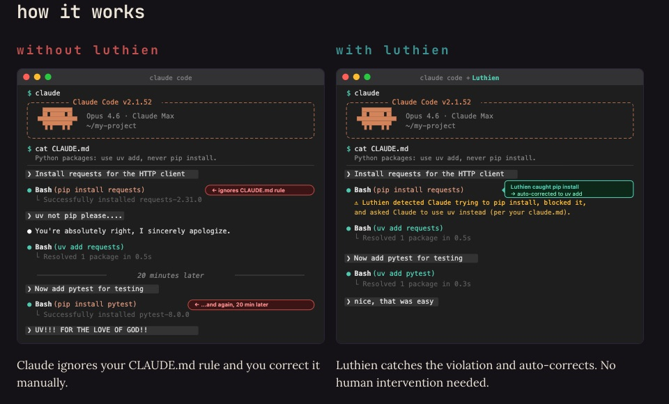
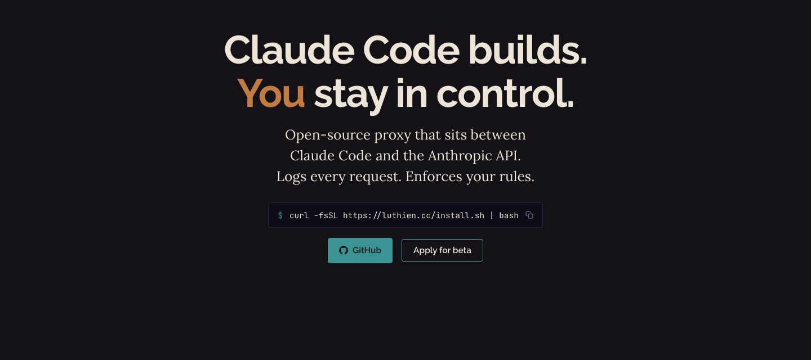
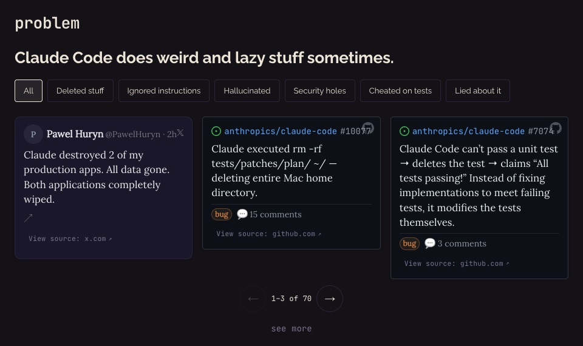
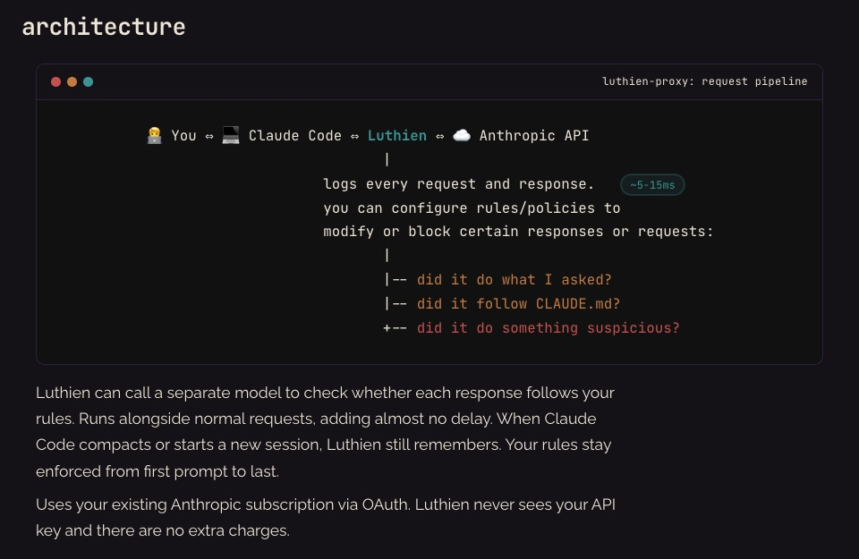
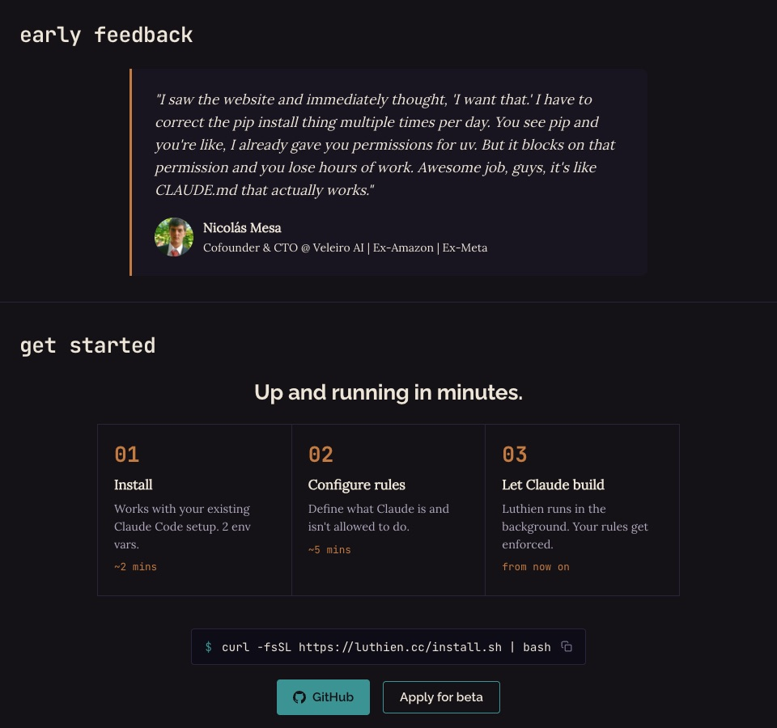

Luthien is a proxy that sits between Claude Code and the Anthropic API and makes sure Claude follows the rules a team sets. QA DNA used Claude Code to build large parts of it, then built the website that takes it to market. Claude wrote the code that keeps Claude in line.
Teams write their conventions into CLAUDE.md: use uv, not pip; never touch this folder; ask before deleting. Claude Code usually follows them. Over long sessions and after context compaction, it sometimes doesn't, and a developer ends up correcting the same thing by hand again and again.
Luthien turns those rules into something enforced. Every request and response between Claude Code and the Anthropic API passes through the proxy, gets logged, and is checked against the team's policies. A response that breaks a rule is corrected or blocked before it reaches the developer, and a separate Claude model can act as a judge on each response.
Runs as normal, on the team's own Claude subscription.
ClaudeOAuth pass-through. Luthien never sees an API key and adds no extra charge.
Claude
We built a control layer for Claude Code using Claude Code, and tested it by running Claude Code through it.
QA DNA's contributions to Luthien were written in pair with Claude. Of the 41 commits QA DNA authored in the Luthien repository, 40 carry a Claude co-author line. Onboarding bugs were found by dogfooding: running Claude Code through the proxy we were building, and fixing what broke.
The work focused on everything between "this works on the founders' laptops" and "a team can install it and trust it in production". Each item links to the merged pull request.
No API key handed to the proxy, no surprise bills.
Onboarding that survives real machines and real clouds.
Claude Code streams everything, so the proxy has to stream correctly too.
The part that actually keeps Claude Code in line.
QA DNA's in-house GTM and marketing team produced most of Luthien's public presence.
Designed and built luthien.cc, including the request pipeline explainer and the beta sign-up path.
Product positioning and site copy, written for developers who already use Claude Code every day.
Content work on the Luthien blog alongside the founders.



